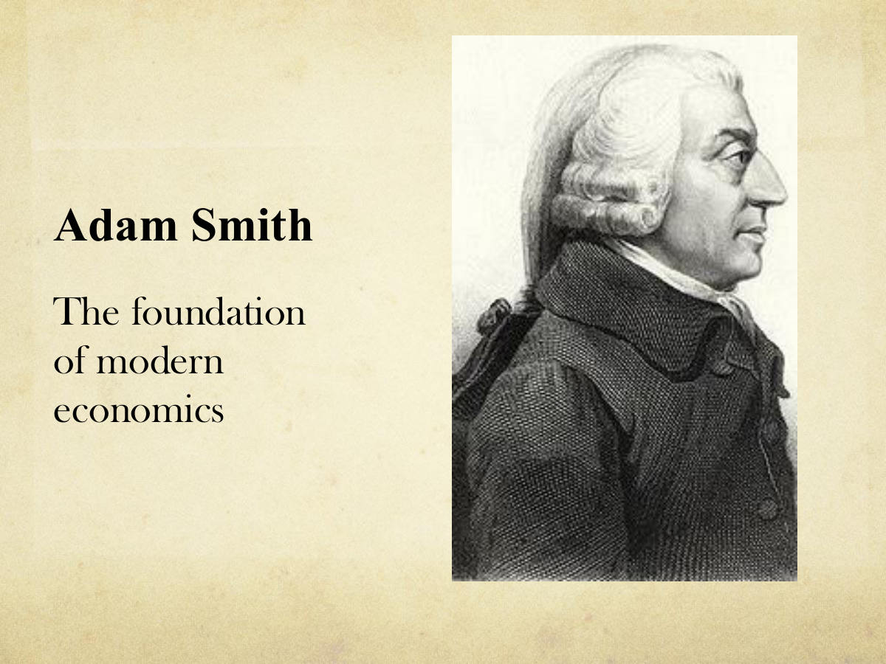
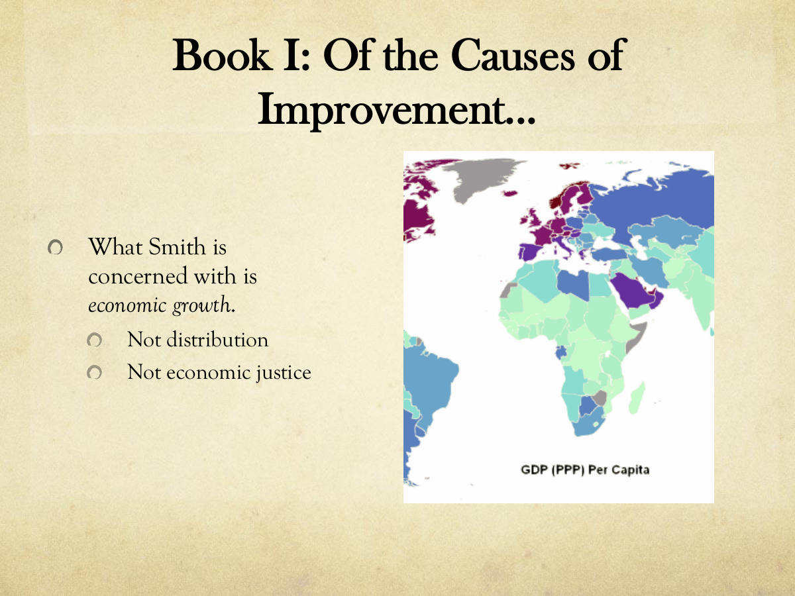
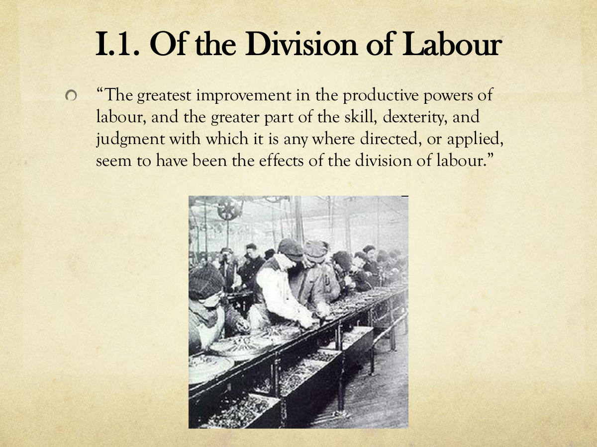
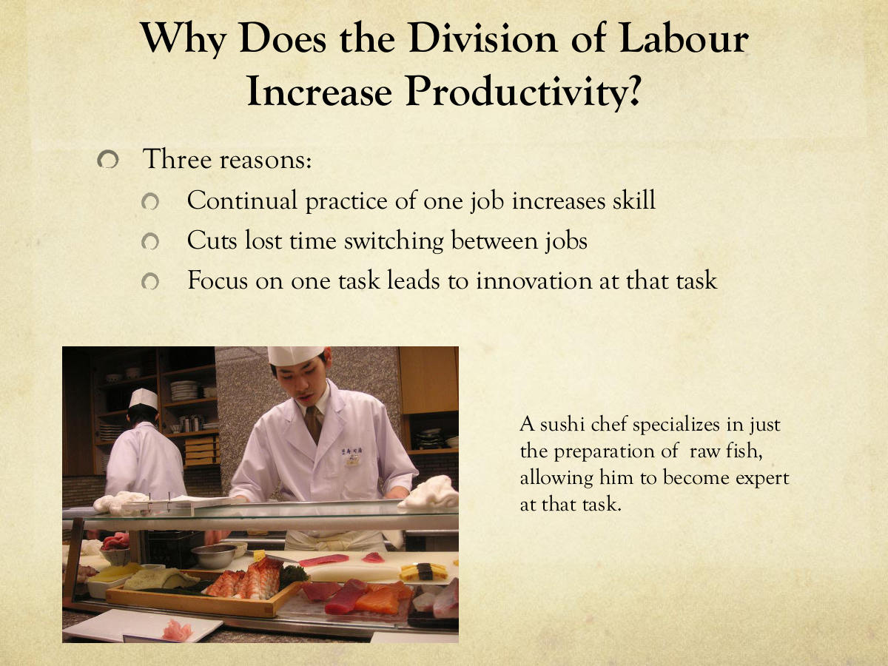

![I.2 Continued. “Give me that which I want, and you shall have this which you want, is the meaning of every such offer; and it is in this manner that we obtain from one another the far greater part of those good offices which we stand in need of. It is not from the benevolence of the butcher, the brewer, or the baker, that we expect our dinner, but from their regard to their own interest. We address ourselves, not to their humanity but to their self-love, and never talk to them of our own necessities but of their advantages.”](AdamSmith/slide-06.jpg)

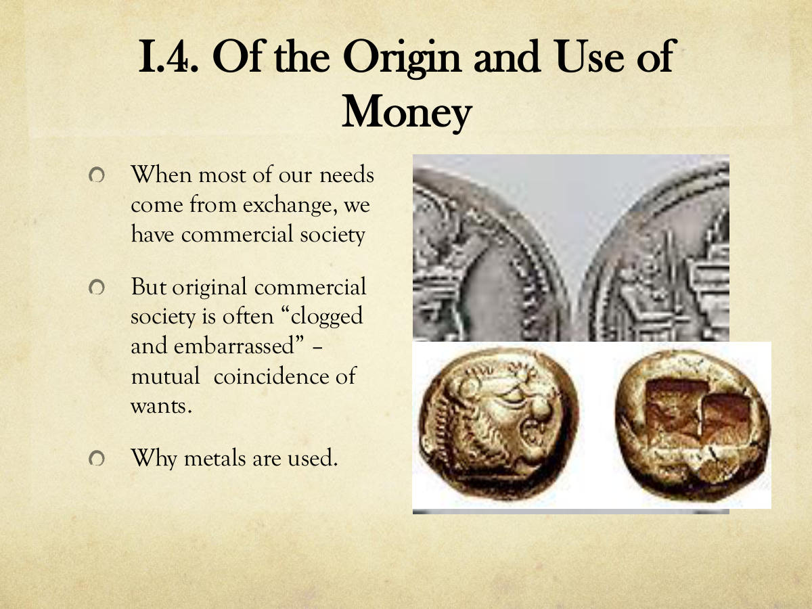
![I.5. Of the Real and Nominal Price of Commodities, or of their Price in Labour, and their Price in Money. “Every man is rich or poor according to the degree in which he can afford to enjoy the necessaries, conveniencies, and amusements of human life. But after the division of labour has once thoroughly taken place, it is but a very small part of these with which a man's own labour can supply him. The far greater part of them he must derive from the labour of other people, and he must be rich or poor according to the quantity of that labour which he can command, or which he can afford to purchase.” The inklings of a labour theory of value.](AdamSmith/slide-09.jpg)
![I.6. Of the Component Parts of the Price of Commodities. “In that early and rude state of society which precedes both the accumulation of stock and the appropriation of land, the proportion between the quantities of labour necessary for acquiring different objects seems to be the only circumstance which can afford any rule for exchanging them for one another. If among a nation of hunters, for example, it usually costs twice the labour to kill a beaver which it does to kill a deer, one beaver should naturally exchange for or be worth two deer. It is natural that what is usually the produce of two days or two hours labour, should be worth double of what is usually the produce of one day's or one hour's labour.” More inklings of a labour theory of value.](AdamSmith/slide-10.jpg)
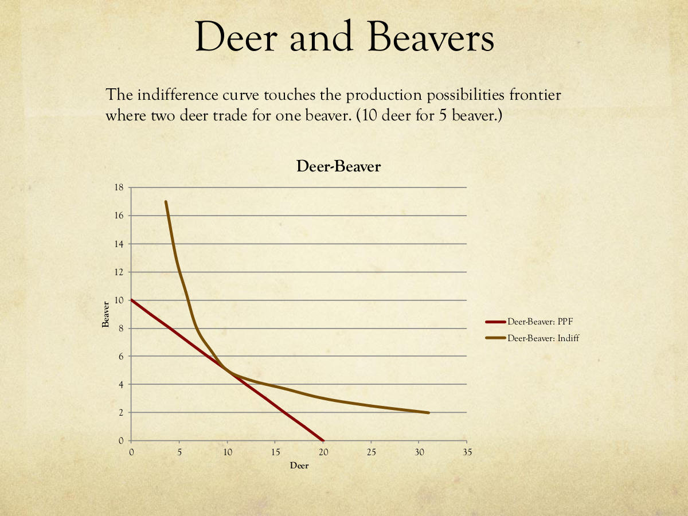
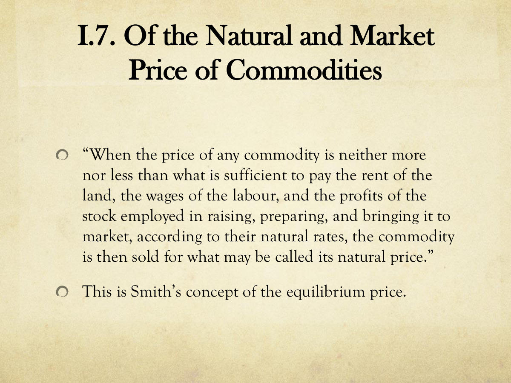
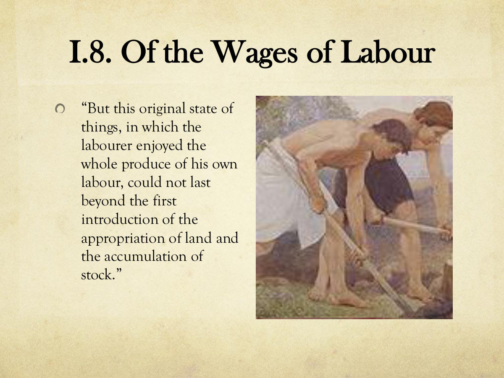
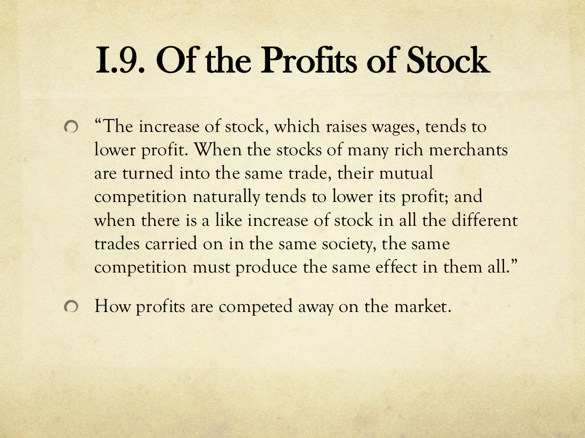
![I.10. Of Wages and Profit in the Different Employments of Labour and Stock. “The whole of the advantages and disadvantages of the different employments of labour and stock must, in the same neighbourhood, be either perfectly equal or continually tending to equality. If in the same neighbourhood, there was any employment evidently either more or less advantageous than the rest, so many people would crowd into it in the one case, and so many would desert it in the other, that its advantages would soon return to the level of other employments.” More equilibrium theorizing.](AdamSmith/slide-15.jpg)
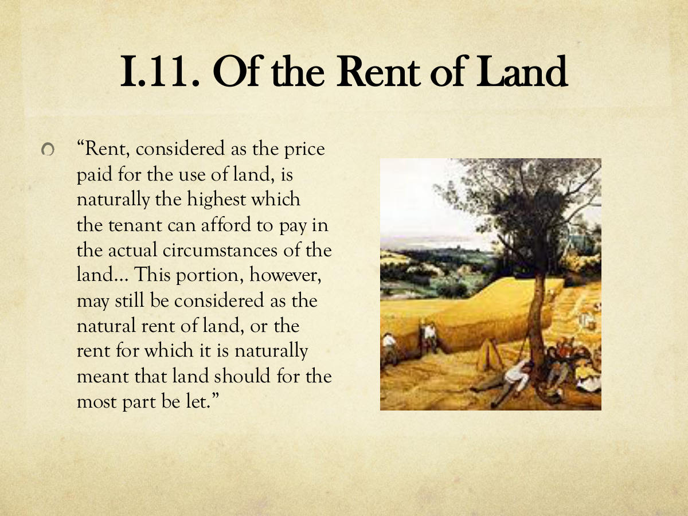
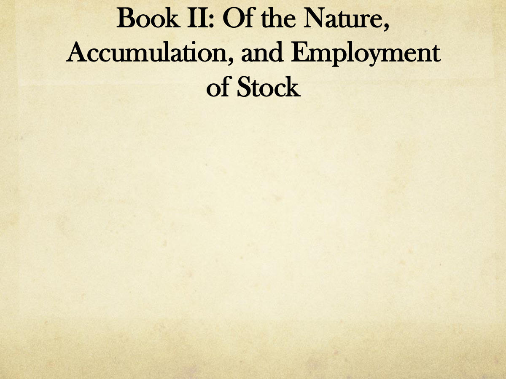
![II.1. Of the Division of Stock. “There are two different ways in which a capital may be employed so as to yield a revenue or profit to its employer. “First, it may be employed in raising, manufacturing, or purchasing goods, and selling them again with a profit. The capital employed in this manner yields no revenue or profit to its employer, while it either remains in his possession, or continues in the same shape. The goods of the merchant yield him no revenue or profit till he sells them for money, and the money yields him as little till it is again exchanged for goods. His capital is continually going from him in one shape, and returning to him in another... Such capitals, therefore, may very properly be called circulating capitals.” --- Inventories. “Secondly, it may be employed in the improvement of land, in the purchase of useful machines and instruments of trade, or in suchlike things as yield a revenue or profit without changing masters, or circulating any further. Such capitals, therefore, may very properly be called fixed capitals.” – Fixed assets](AdamSmith/slide-18.jpg)
![II.2. Of Money Considered as a particular Branch of the General Stock of the Society... “The whole expense of maintaining the fixed capital must evidently be excluded from the neat revenue of the society. Neither the materials necessary for supporting their useful machines and instruments of trade, their profitable buildings, etc. nor the produce of the labour necessary for fashioning those materials into the proper form, can ever make any part of it… “The intention of the fixed capital is to increase the productive powers of labour, or to enable the same number of labourers to perform a much greater quantity of work.” Here Smith gives us an early measure of GDP!](AdamSmith/slide-19.jpg)
![II.3. Of the Accumulation of Capital, or of Productive and Unproductive Labour. “There is one sort of labour which adds to the value of the subject upon which it is bestowed; there is another which has no such effect. The former as it produces a value, may be called productive, the latter, unproductive labour. {Some. French authors of great learning and ingenuity have used those words in a different sense. In the last chapter of the fourth book, I shall endeavour to shew that their sense is an improper one.} Thus the labour of a manufacturer adds generally to the value of the materials which he works upon, that of his own maintenance, and of his master's profit. The labour of a menial servant, on the contrary, adds to the value of nothing.”](AdamSmith/slide-20.jpg)
![II.4. Of Stock Lent at Interest. “In some countries the interest of money has been prohibited by law. But as something can every-where be made by the use of money, something ought every-where to be paid for the use of it. This regulation, instead of preventing, has been found from experience to increase the evil of usury; the debtor being obliged to pay, not only for the use of the money, but for the risk which his creditor runs by accepting a compensation for that use. He is obliged, if one may say so, to insure his creditor from the penalties of usury.”](AdamSmith/slide-21.jpg)
![II.5. Of the Different Employment of Capitals. “A capital may be employed in four different ways: either, first, in procuring the rude produce annually required for the use and consumption of the society; or, secondly, in manufacturing and preparing that rude produce for immediate use and consumption; or, thirdly, in transporting either the rude or manufactured produce from the places where they abound to those where they are wanted; or, lastly, in dividing particular portions of either into such small parcels as suit the occasional demands of those who want them. In the first way are employed the capitals of all those who undertake the improvement or cultivation of lands, mines, or fisheries; in the second, those of all master manufacturers; in the third, those of all wholesale merchants; and in the fourth, those of all retailers.”](AdamSmith/slide-22.jpg)
![Of the Different Employment of Capitals (II) “Each of these four methods of employing a capital is essentially necessary either to the existence or extension of the other three, or to the general conveniency of the society. “Unless a capital was employed in furnishing rude produce to a certain degree of abundance, neither manufactures nor trade of any kind could exist. “Unless a capital was employed in manufacturing that part of the rude produce which requires a good deal of preparation before it can be fit for use and consumption, it either would never be produced, because there could be no demand for it; or if it was produced spontaneously, it would be of no value in exchange, and could add nothing to the wealth of the society. “Unless a capital was employed in transporting either the rude or manufactured produce from the places where it abounds to those where it is wanted, no more of either could be produced than was necessary for the consumption of the neighbourhood. The capital of the merchant exchanges the surplus produce of one place for that of another, and thus encourages the industry and increases the enjoyments of both. “Unless a capital was employed in breaking and dividing certain portions either of the rude or manufactured produce into such small parcels as suit the occasional demands of those who want them, every man would be obliged to purchase a greater quantity of the goods he wanted than his immediate occasions required. If there was no such trade as a butcher, for example, every man would be obliged to purchase a whole ox or a whole sheep at a time.”](AdamSmith/slide-23.jpg)
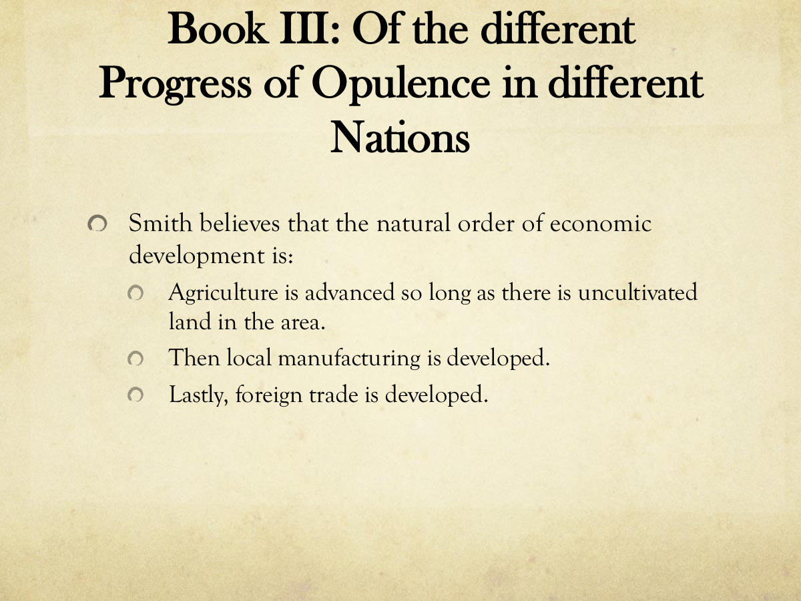
![III.1. Of the Natural Progress of Opulence. “We must not, however, upon this account, imagine that the gain of the town is the loss of the country. The gains of both are mutual and reciprocal, and the division of labour is in this, as in all other cases, advantageous to all the different persons employed in the various occupations into which it is subdivided. The inhabitants of the country purchase of the town a greater quantity of manufactured goods, with the produce of a much smaller quantity of their own labour, than they must have employed had they attempted to prepare them themselves.”](AdamSmith/slide-25.jpg)
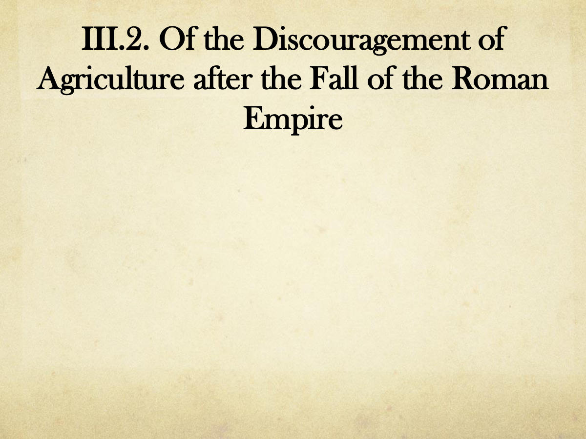
![III.3. Of the Rise and Progress of Cities and Towns, after the Fall of the Roman Empire. “The inhabitants of cities and towns were, after the fall of the. Roman empire, not more favoured than those of the country. They consisted, indeed, of a very different order of people from the first inhabitants of the ancient republics of Greece and Italy. These last were composed chiefly of the proprietors of lands, among whom the public territory was originally divided, and who found it convenient to build their houses in the neighbourhood of one another, and to surround them with a wall, for the sake of common defence. After the fall of the Roman empire, on the contrary, the proprietors of land seem generally to have lived in fortified castles on their own estates, and in the midst of their own tenants and dependants. The towns were chiefly inhabited by tradesmen and mechanics, who seem, in those days, to have been of servile, or very nearly of servile condition.”](AdamSmith/slide-27.jpg)
![III.4. How the Commerce of the Towns Contributed to the Country. “The increase and riches of commercial and manufacturing towns contributed to the improvement and cultivation of the countries to which they belonged in three different ways. “First, by affording a great and ready market for the rude produce of the country, they gave encouragement to its cultivation and further improvement. “Secondly, the wealth acquired by the inhabitants of cities was frequently employed in purchasing such lands as were to be sold, of which a great part would frequently be uncultivated. “Thirdly, and lastly, commerce and manufactures gradually introduced order and good government, and with them, the liberty and security of individuals, among the inhabitants of the country…”](AdamSmith/slide-28.jpg)
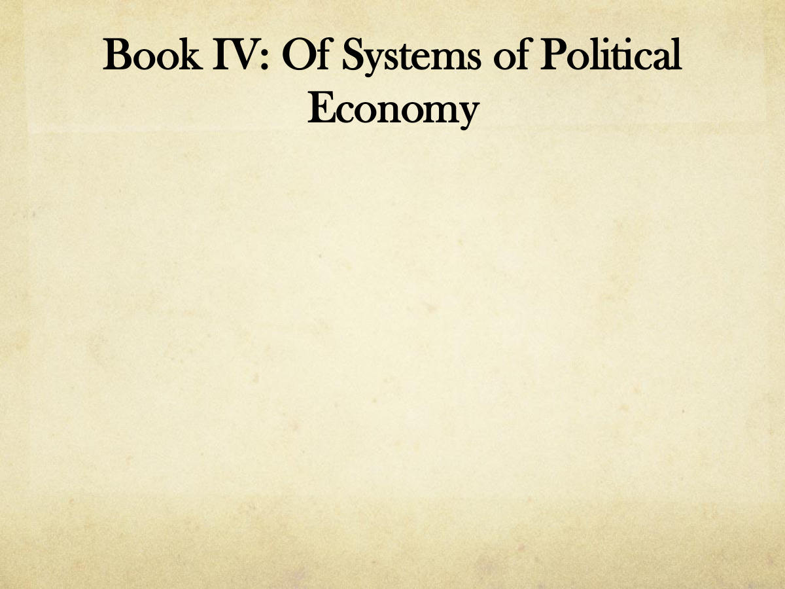
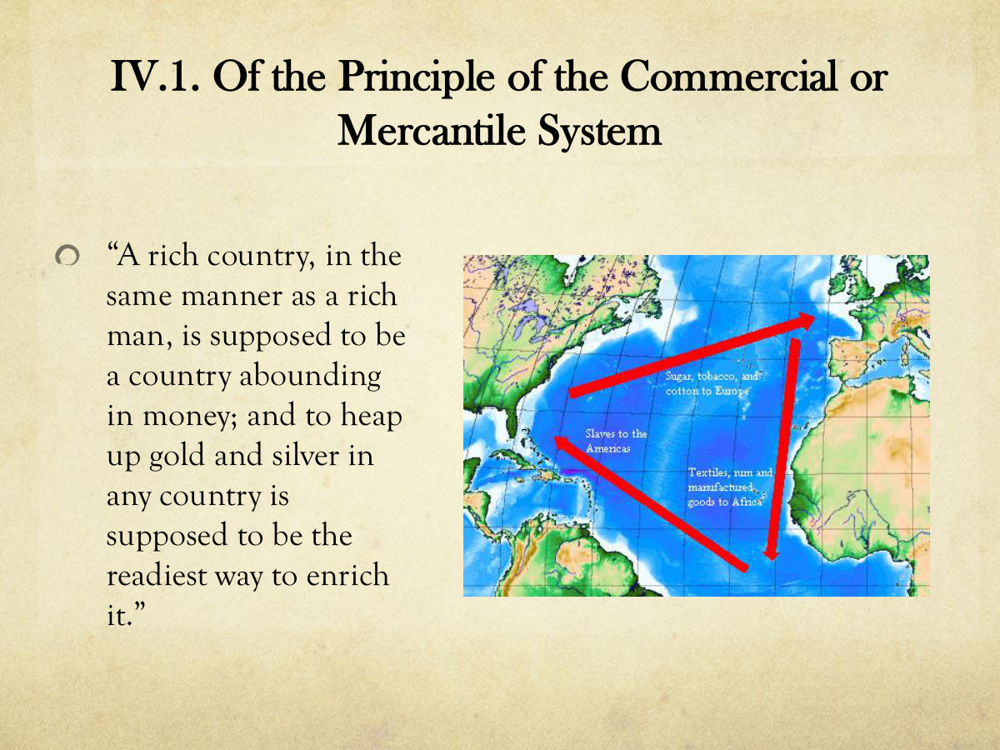
![IV.2 Of Restraints upon the Importation from Foreign Countries of such Goods as can be Produced at Home. “By preferring the support of domestic to that of foreign industry, he intends only his own security; and by directing that industry in such a manner as its produce may be of the greatest value, he intends only his own gain, and he is in this, as in many other cases, led by an invisible hand to promote an end which was no part of his intention. Nor is it always the worse for the society that it was no part of it. By pursuing his own interest he frequently promotes that of the society more effectually than when he really intends to promote it.”](AdamSmith/slide-31.jpg)

![IV.3. Of the extraordinary Restraints upon the. Importation of Goods of almost all Kinds, from those Countries with which the Balance is supposed to be Disadvantageous. “First, Though it were certain that in the case of a free trade between France and England, for example, the balance would be in favour of France, it would by no means follow that such a trade would be disadvantageous to England, or that the general balance of its whole trade would thereby be turned more against it. If the wines of France are better and cheaper than those of Portugal, or its linens than those of Germany, it would be more advantageous for Great Britain to purchase both the wine and the foreign linen which it had occasion for of France, than of Portugal and. Germany. Though the value of the annual importations from. France would thereby be greatly augmented, the value of the whole annual importations would be diminished, in proportion as the French goods of the same quality were cheaper than those of the other two countries. This would be the case, even upon the supposition that the whole French goods imported were to be consumed in Great Britain.”](AdamSmith/slide-33.jpg)
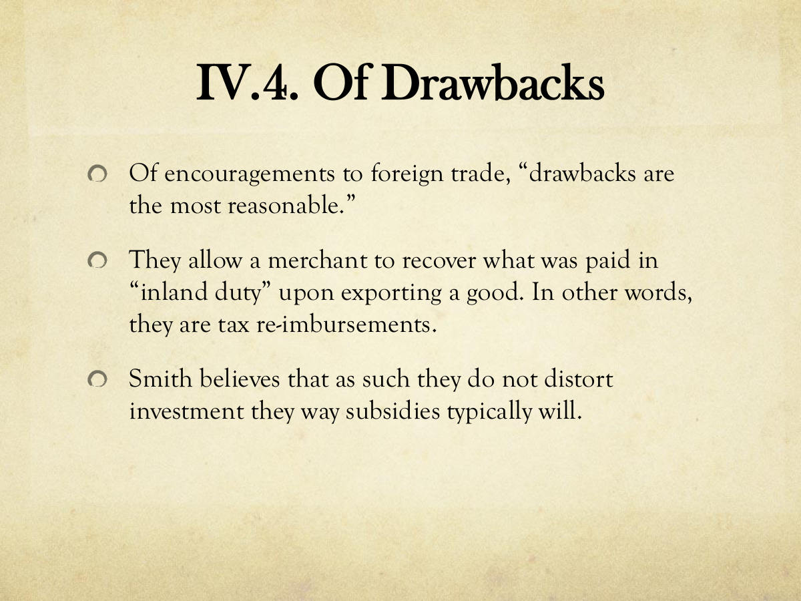
![IV.5. Of Bounties. “Bounties [subsidies], it is allowed, ought to be given to those branches of trade only which cannot be carried on without them. But every branch of trade in which the merchant can sell his goods for a price which replaces to him, with the ordinary profits of stock, the whole capital employed in preparing and sending them to market, can be carried on without a bounty. Every such branch is evidently upon a level with all the other branches of trade which are carried on without bounties, and cannot, therefore, require one more than they. Those trades only require bounties, in which the merchant is obliged to sell his goods for a price which does not replace to him his capital, together with the ordinary profit, or in which he is obliged to sell them for less than it really cost him to send them to market. The bounty is given in order to make up this loss, and to encourage him to continue, or, perhaps, to begin a trade, of which the expense is supposed to be greater than the returns, of which every operation eats up a part of the capital employed in it, and which is of such a nature, that if all other trades resembled it, there would soon be no capital left in the country.”](AdamSmith/slide-35.jpg)
![IV.6. Of Treaties of Commerce. “When a nation binds itself by treaty, either to permit the entry of certain goods from one foreign country which it prohibits from all others, or to exempt the goods of one country from duties to which it subjects those of all others, the country, or at least the merchants and manufacturers of the country, whose commerce is so favoured, must necessarily derive great advantage from the treaty… Such treaties, however, though they may be advantageous to the merchants and manufacturers of the favoured, are necessarily disadvantageous to those of the favouring country. A monopoly is thus granted against them to a foreign nation; and they must frequently buy the foreign goods they have occasion for, dearer than if the free competition of other nations was admitted.”](AdamSmith/slide-36.jpg)
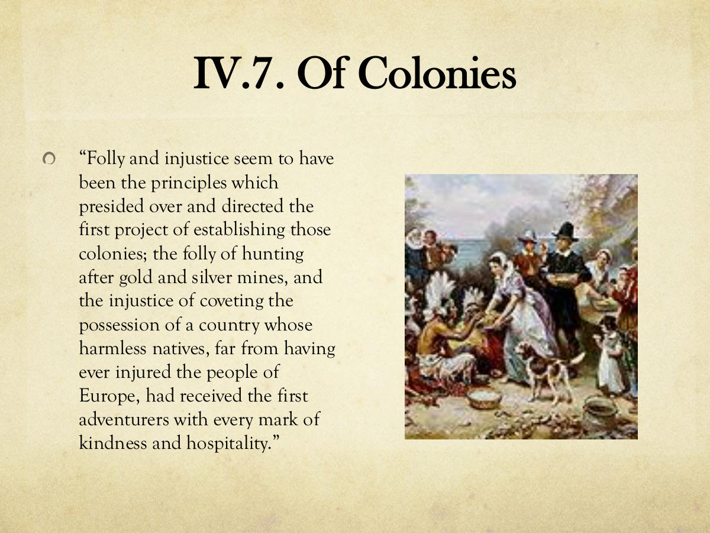
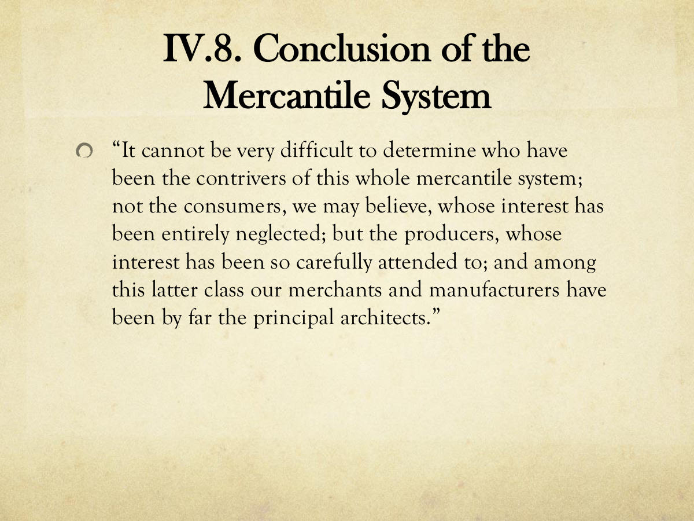
![IV.9. Of the Agricultural Systems, or of those. Systems of Political Œconomy, which Represent the Produce of Land, as either the Sole or the. Principal, Source of the Revenue and Wealth of. Every Country. “If the rod be bent too much one way, says the proverb, in order to make it straight, you must bend it as much the other. The French philosophers, who have proposed the system which represents agriculture as the sole source of the revenue and wealth of every country, seem to have adopted this proverbial maxim; and, as in the plan of Mr. Colbert, the industry of the towns was certainly overvalued in comparison with that of the country, so in their system it seems to be as certainly under-valued.” Smith is criticizing the physiocrats.](AdamSmith/slide-39.jpg)
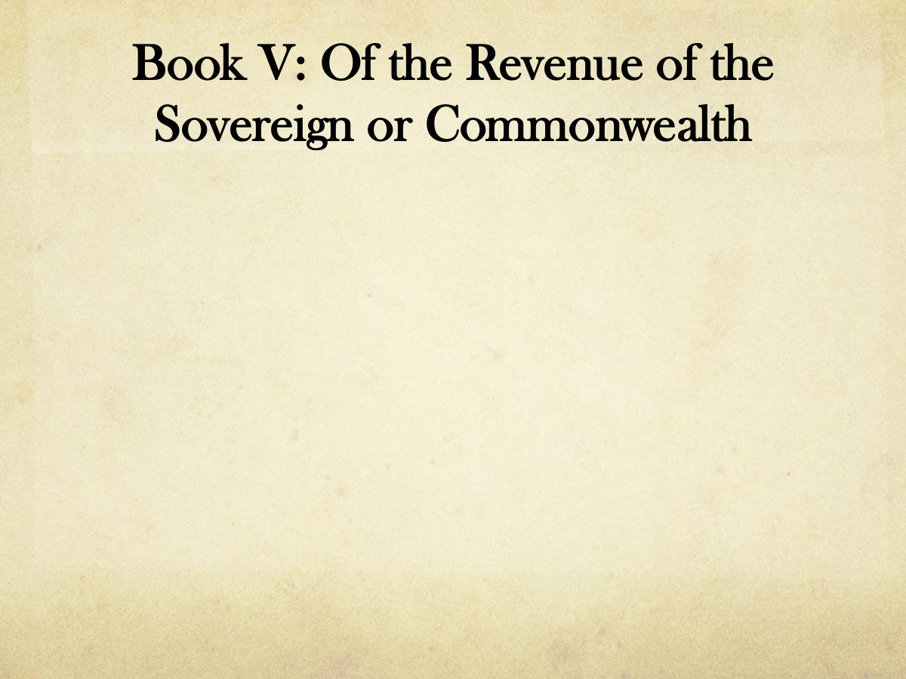
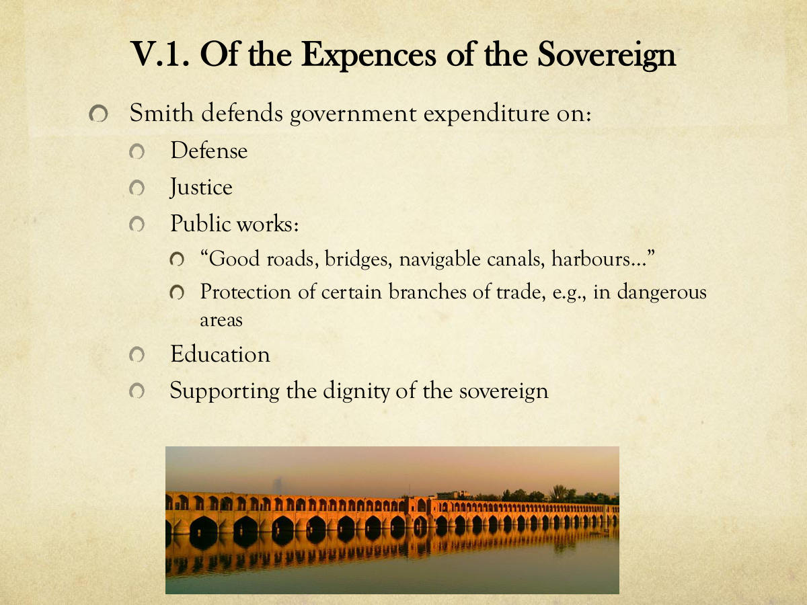

![V.3. Of Public Debts. “When national debts have once been accumulated to a certain degree, there is scarce, I believe, a single instance of their having been fairly and completely paid. The liberation of the public revenue, if it has ever been brought about at all, has always been brought about by a bankruptcy; sometimes by an avowed one, though frequently by a pretended payment. “The raising of the denomination of the coin [inflation] has been the most usual expedient by which a real public bankruptcy has been disguised under the appearance of a pretended payment. If a sixpence, for example, should, either by act of parliament or royal proclamation, be raised to the denomination of a shilling, and twenty sixpences to that of a pound sterling; the person who, under the old denomination, had borrowed twenty shillings, or near four ounces of silver, would, under the new, pay with twenty sixpences, or with something less than two ounces.”](AdamSmith/slide-43.jpg)